1下學期 第 3 章
生物的分類與演化
答案卡
點題號可跳到該題詳解。開啟「遮住答案」後，點一下塗卡格才會顯示答案。
詳解
蝸牛、烏賊皆屬於軟體動物門；海膽、海參則屬於棘皮動物門。故選(B)。
看題目
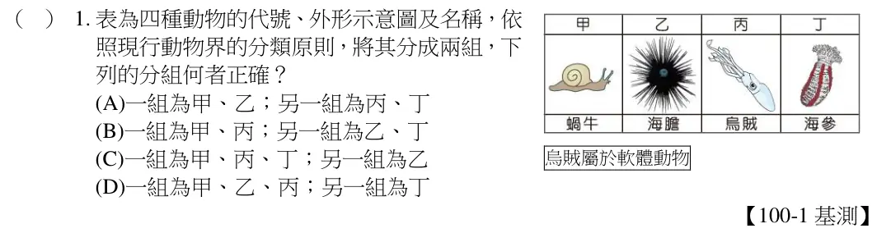
如圖所示，老鼠存活個體數為先降後升，所以老鼠和藥劑最合理的相關推論為：部分老鼠原本對藥劑就有抵抗力且生出子代。故選(D)。
看題目
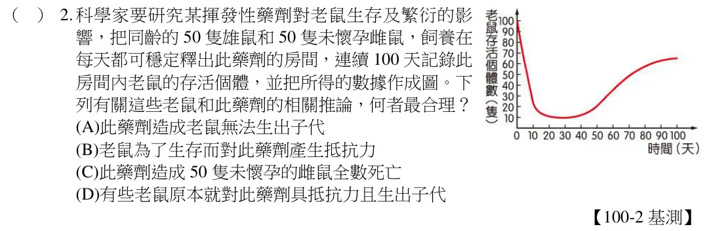
(A)(C)可能出現在陸地或海洋；(B)馬為陸生動物；(D)三葉蟲為古生代海洋生物，所以最有可能作為海裡的證據。故選擇(D)。
看題目
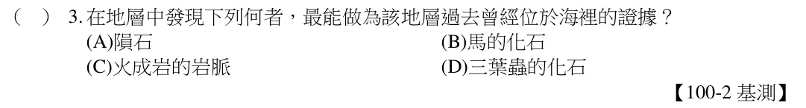
地錢、土馬騌為無維管束，利用孢子繁殖的植物。筆筒樹、玉米為有維管束植物，前者為蕨類，後者為開花植物。故選(B)。
看題目
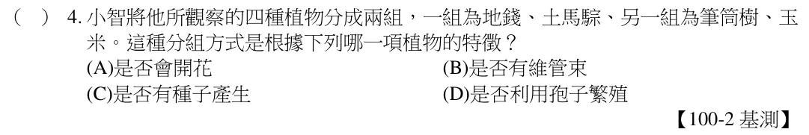
從學名判斷美洲黑熊、棕熊皆與亞洲黑熊同屬，大貓熊與前三者不同屬，但四者皆同科。(A)大貓熊與棕熊同科不同屬。(B)亞洲黑熊與美洲黑熊同屬不同種。(D)大貓熊和美洲黑熊同科不同屬。故選(C)。
看題目
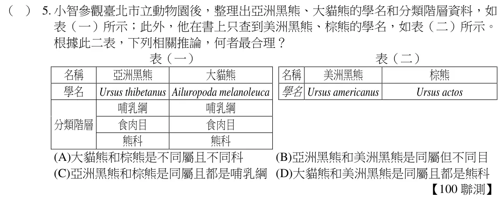
酵母菌為真菌類生物屬於菌物界，在缺氧的環境下會行發酵作用，產生CO2＋酒精。
(A)為原生生物界；(B)為原核生物界；(D)為原核生物界。故選(C)。
看題目
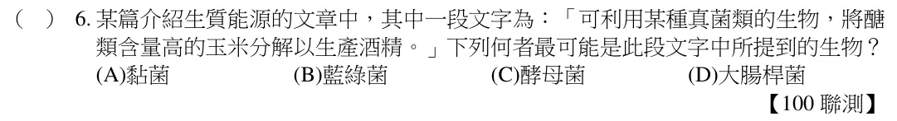
裸子植物、被子植物和蕨類植物皆為維管束植物，蘚苔植物則為無維管束植物，因此在介紹維管束的書籍中，較不可能會有蘚苔植物的詳細資料。故選(C)。
看題目
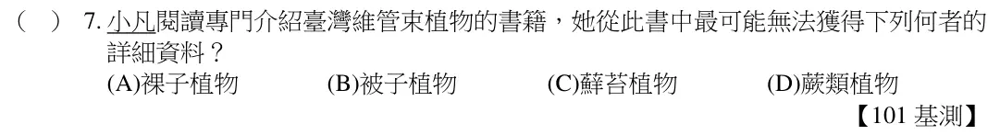
在圖中的灰色陰影為爬蟲類所有，而棘皮動物及節肢動物皆無的特徵；(A)脊椎骨是爬蟲類的特徵，而棘皮動物及節肢動物皆無此特徵；(B)細胞核是爬蟲類、棘皮動物及節肢動物皆有的特徵；(C)身體有分節是節肢動物所有的特徵，爬蟲類則具有分節的骨骼，而棘皮動物則無身體分節的情形；(D)可利用管足運動是棘皮動物所有，而爬蟲類及節肢動物皆無的特徵。故選(A)。
看題目
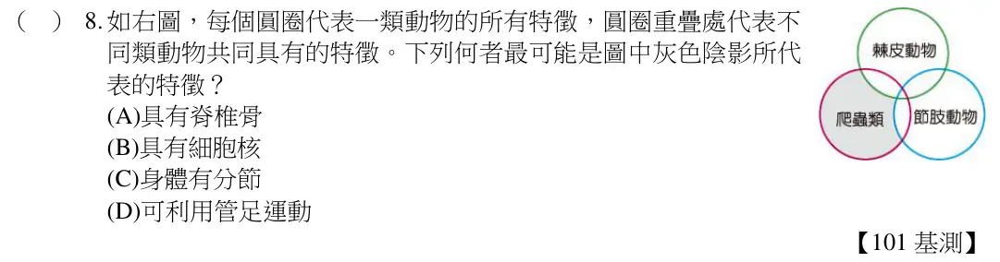
根據敘述兩者自然交配所生的子代仍具有生殖能力，表示兩者為同種生物，學名相同。故選(B)。
看題目
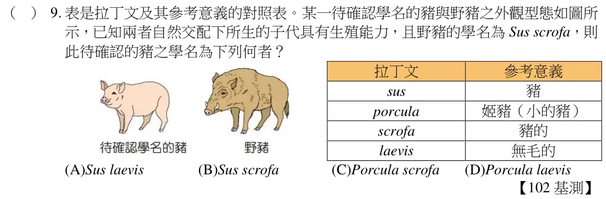
僅有種子植物能以種子繁殖，園區中的開花植物和裸子植物均屬於種子植物。故選(B)。
看題目
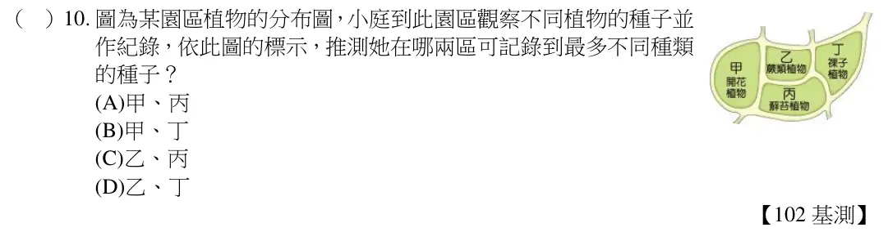
在本題中無法得知雙子葉植物所占的比例，不會開花的植物包含蘚苔植物、蕨類植物、裸子植物，共占38.5﹪，沒有維管束的植物僅為蘚苔植物，占26.1﹪，可產生果實的植物為被子植物，占61.5﹪。故選(B)。
看題目
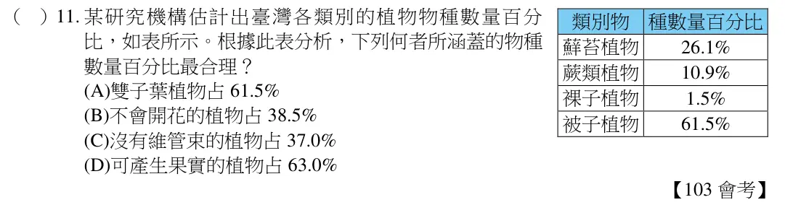
依據特徵描述，本題中的動物分類如下：甲為爬蟲類，乙為魚類，丙為軟體動物，丁為哺乳類。除了軟體動物無脊椎骨之外，其他三種動物皆具有脊椎骨。故選(D)。
看題目
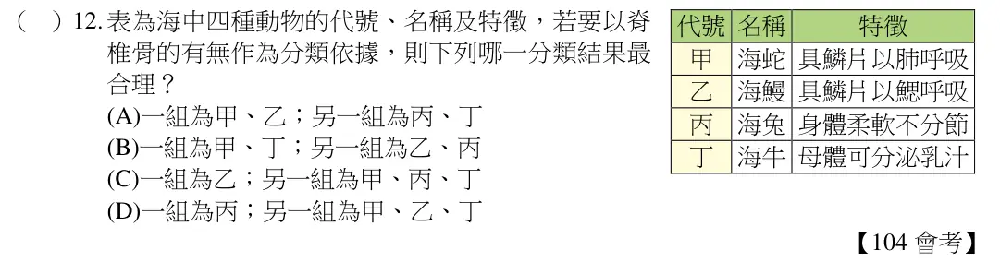
看題組文章
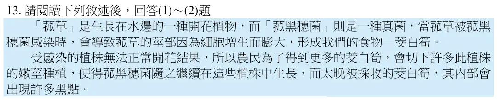
莖為植物的營養器官，利用嫩莖種植的方式屬無性生殖，子代的基因會和親代完全相同，且新增生的細胞皆由細胞分裂而產生。故選(C)。
看題目
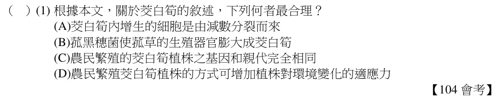
依照題目敘述，可判斷茭白筍中的黑點應為感染其莖部的菰黑穗菌之孢子。故選(B)。
看題目
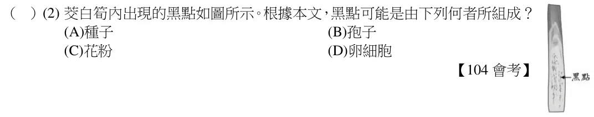
在進行生物分類時，較高層級的分類階層相同時，其下的分類階層不一定相同；較高層級的分類階層不同時，其下的分類階層一定不同；科是目的下一層分類階層，本題中家燕和家雨燕分別屬於Passeriformes 和Apodiformes 這兩個目，因此，在科的階層上，也必定會分別屬於不同的科。故選(B)。
看題目
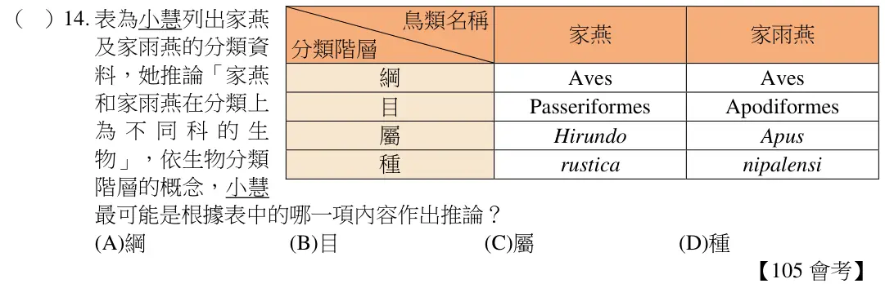
具有葉綠體的原生生物為藻類，由於文中提到此生物具有葉綠體，因此，可行光合作用；且又提及此生物可分解養分產生能量，此應為呼吸作用的結果。故選(C)。
看題目
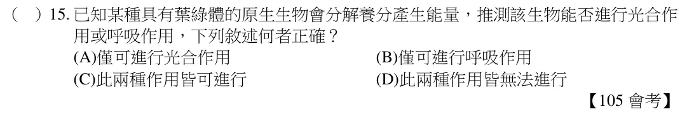
看題組文章
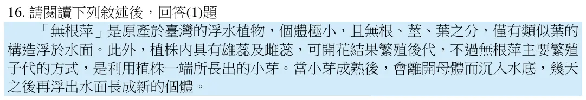
由於閱讀短文中有敘述無根萍具有雄蕊及雌蕊，可開花結果，可知無根萍為開花植物，也就是被子植物。故選(D)。
看題目
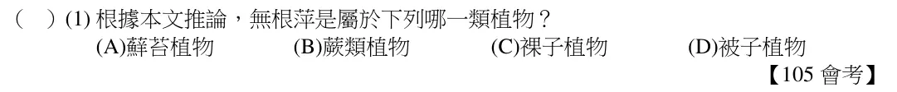
銀杏為裸子植物，不開花，也不具果實，學名Ginkgo biloba，其中Ginkgo 為屬名，為名詞。故選(C)。
看題目
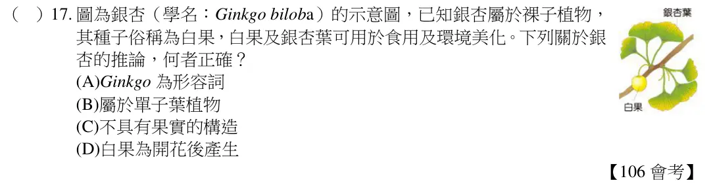
魚類：外溫動物，兩生類：外溫動物，哺乳類：內溫動物，爬蟲類：外溫動物。故選
(C)。
看題目
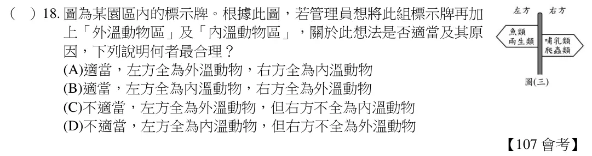
看題組文章
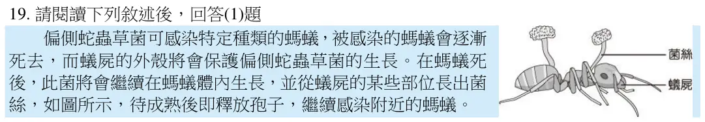
偏側蛇蟲草菌具菌絲，且會釋放孢子，應屬菌物界的生物，而酵母菌亦為菌物界的生物。故選(C)。
看題目
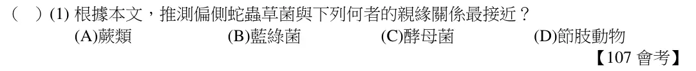
由於仙人掌可開花結果，具花的構造，分類上屬於被子植物。故選(C)。
看題目
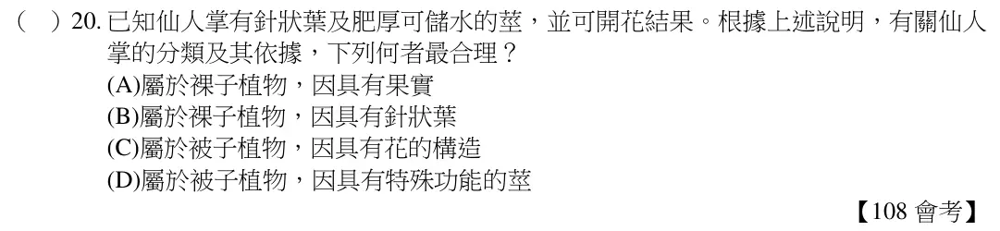
小白鷺、中白鷺和大白鷺是不同種的生物，不論生物的年齡，同種生物的學名皆應相同。故選(C)。
看題目
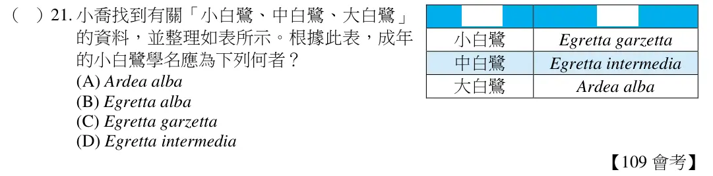
依據天擇說的理論，個體彼此間原本就存在遺傳差異，在不同的環境裡，遺傳差異不同的個體會有不同的存活比例。由本研究結果推論，甲蚊中應有較多的個體原本就對Y 牌殺蟲劑具有抵抗力，因此得以存活而繁衍出更多的後代。故選(C)。
看題目
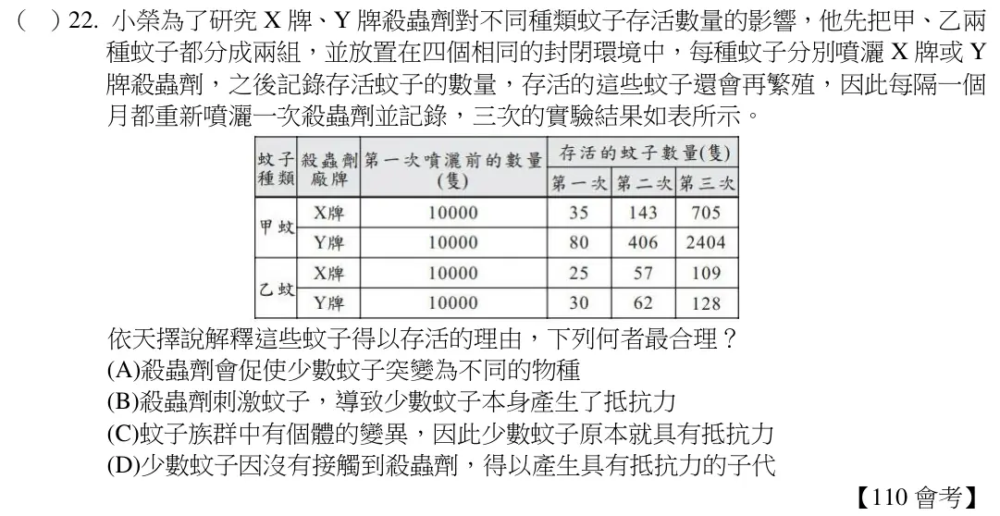
蘇鐵為裸子植物，具有維管束、種子和毬果，無花朵。故選(A)。
看題目
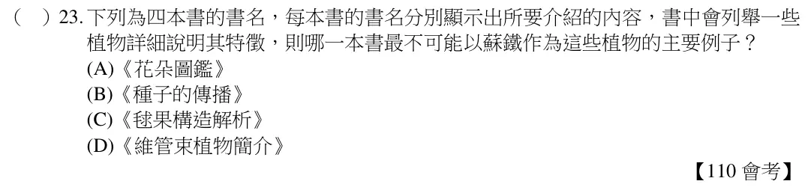
依據表分析，分類的依據可推論如下：甲：體溫（內溫或外溫）乙：受精方式（體內或體外）丙：呼吸器官（肺或鰓）丁：卵生或胎生。故選(B)。
看題目
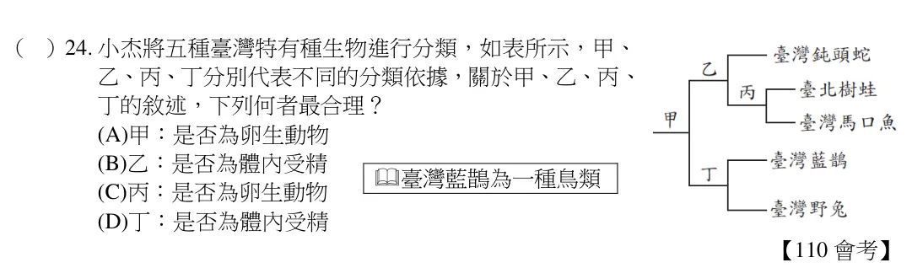
根據此植物莖內的構造判斷，其具有環狀排列的維管束，為雙子葉植物。故選(D)。
看題目
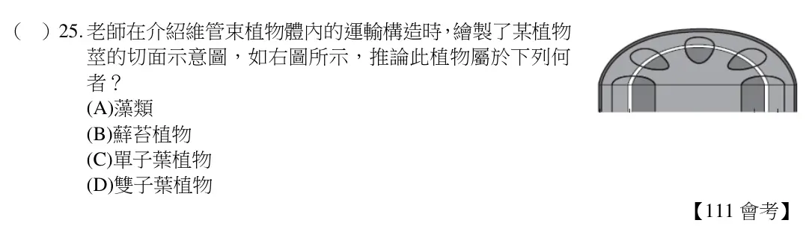
依題意可知毛黴菌具菌絲，屬於真菌界，可以產生孢子，具細胞壁，不具葉綠體；真菌為真核生物，具粒線體。故選【C】。
看題目
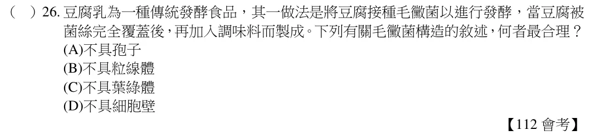
由表的資料得知Lil-2 和Lil-3 為同屬植物，也是同科植物；Lil-1、Myr-6 這二種植物和Lil-2 都為不同屬的植物，無法判斷是否為同目的植物。故選【B】。
看題目
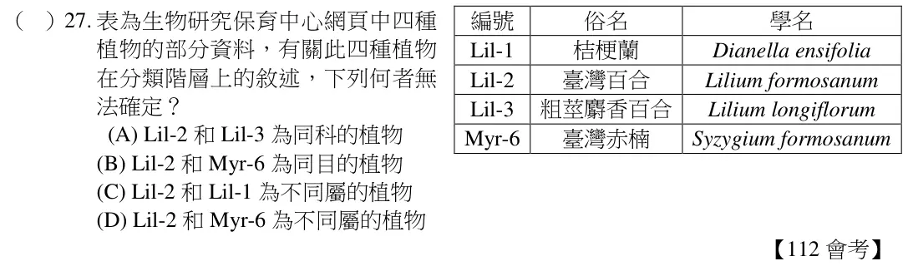
如果想知道論點「所有刺細胞動物都生活在海洋中｣是否成立，可以從反方向(淡水)的角度來考慮：如果在淡水中找到刺絲胞動物，論點不成立；如果在淡水中找不到刺絲胞動物，論點成立。故選【C】。
看題目
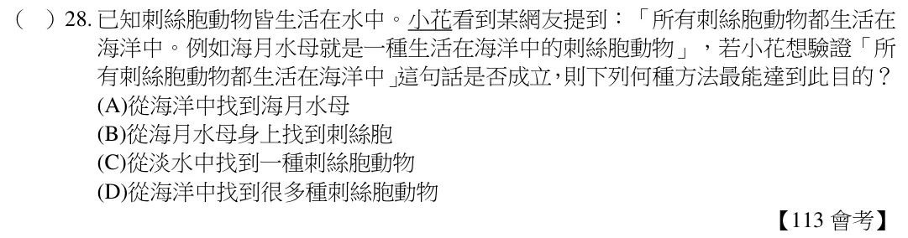
去除外圈就無法獲得養分，表示輸送養分的韌皮部在外圈，此為雙子葉植物維管束環狀構造的特色。故選【C】。
看題目
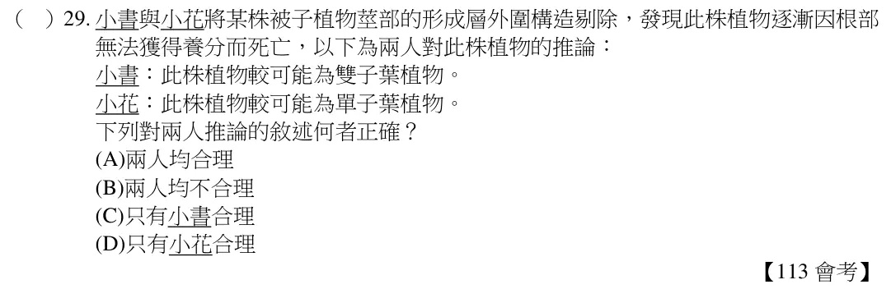
學名的第一個字為屬名，第二個字為種小名。如果小美想找到同屬但不同種的植物，可以搜尋同屬名的學名植物即可。故選【C】。
看題目
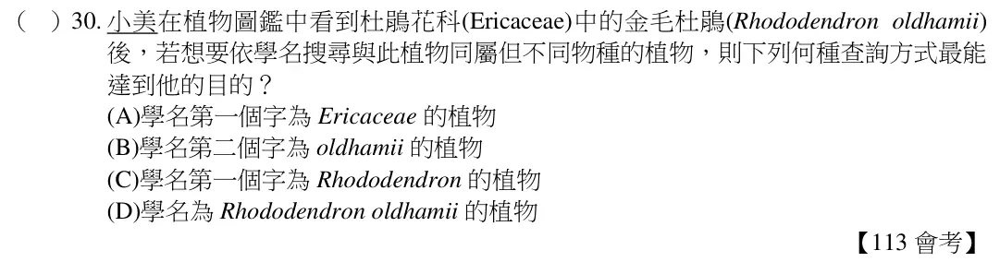
題幹問的是目和屬的數量，由表(四)可知總共有三個不同的科，同科未必不同目，故最多可能有三個目，另外由學名中有四種不同的屬名，故可以分辨出此六種生物，最多有三個目，且有四個不同的屬。故選【A】
看題目
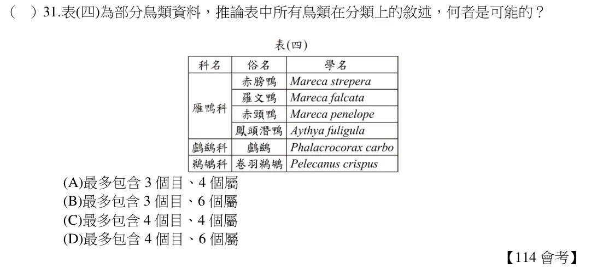
由表格得知甲有細胞核、細胞膜和菌絲，且沒有葉綠素，這是菌物界（真菌界）的明顯特徵；乙則沒有細胞核，但有細胞膜和葉綠素，推測應該為原核生物界中的藍綠菌。故選【D】
看題目
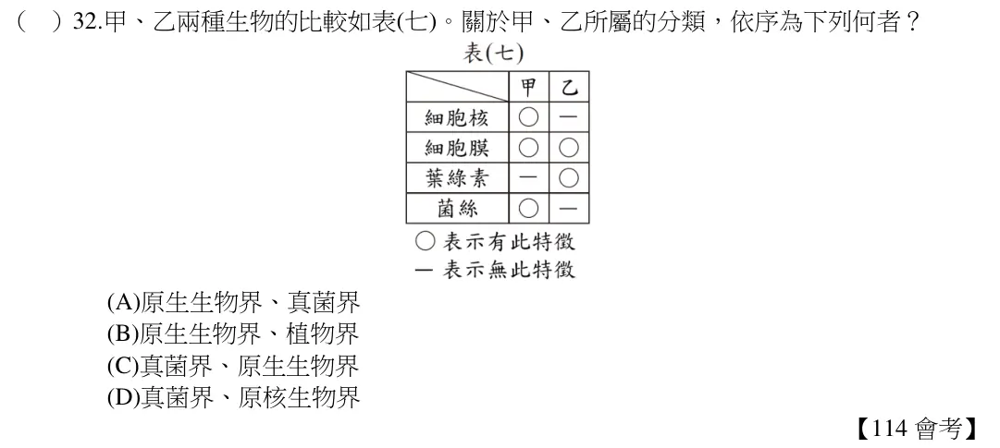